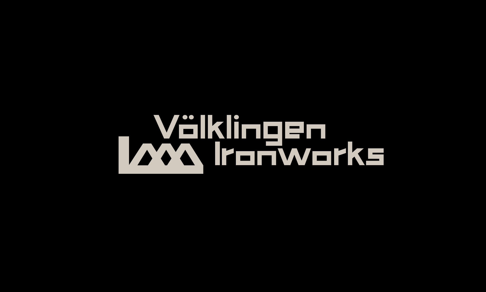
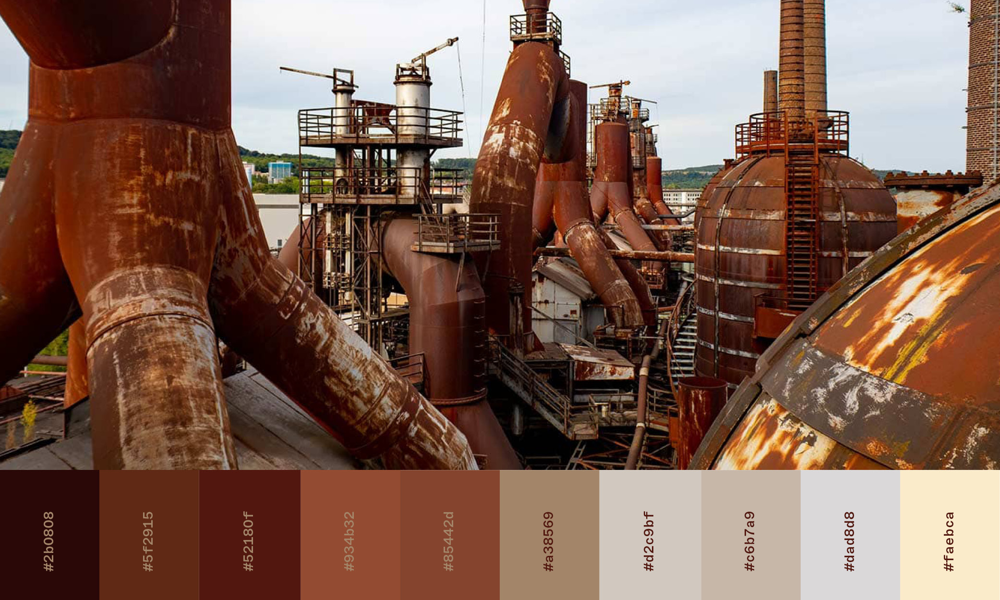
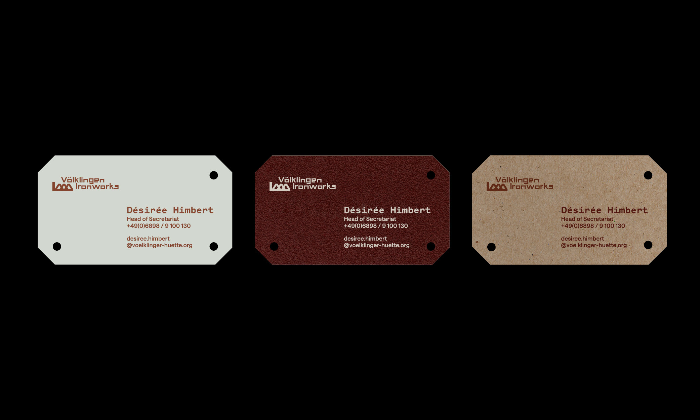
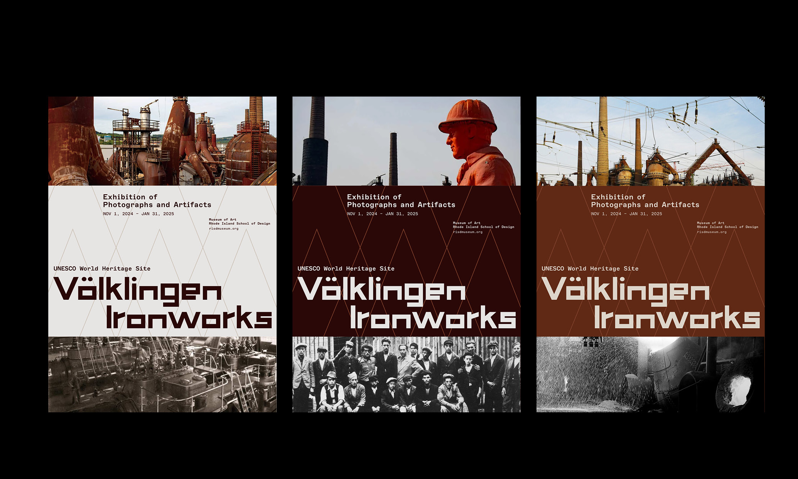
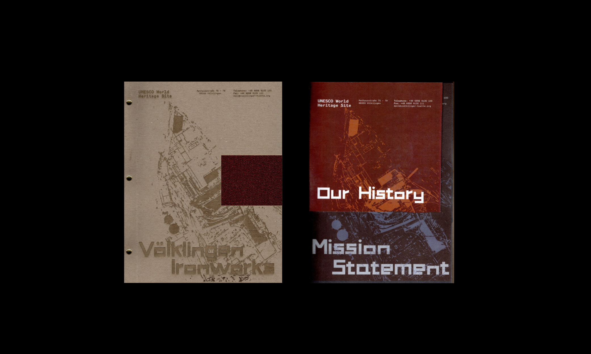
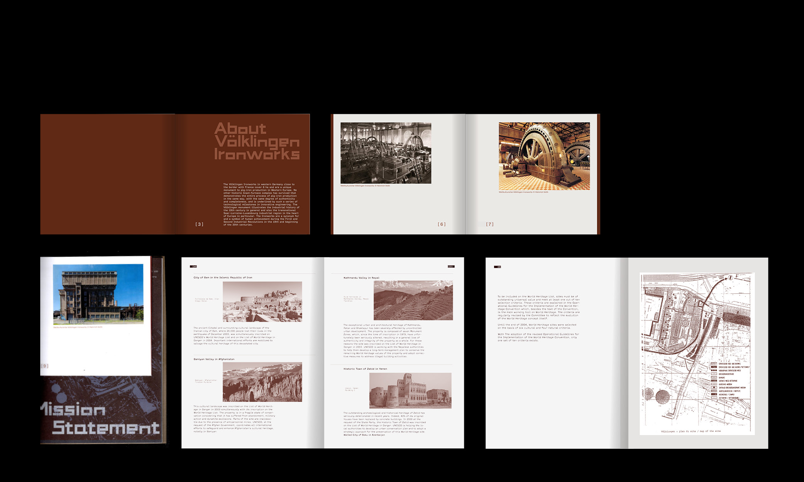
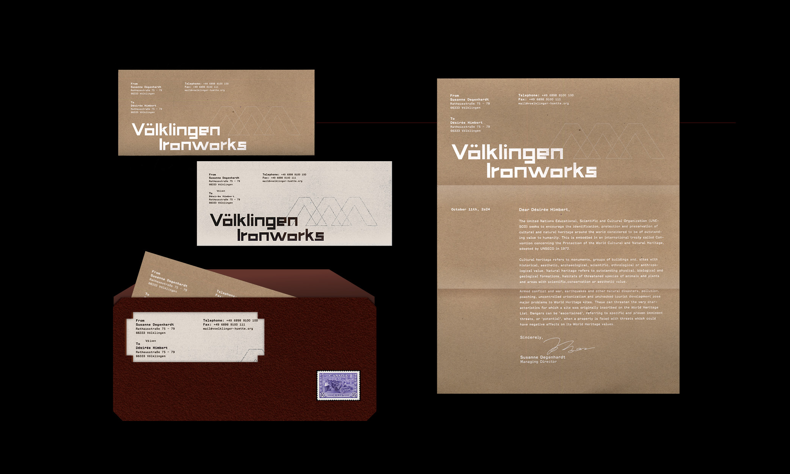

↓
Völklingen Ironworks
for Grad Type III
Branding / 2024
Speculative branding project for UNESCO World Heritage site Völklingen Ironworks, with custom type design inspired by the architect jungle of the factory.
Instructed by Doug Scott






